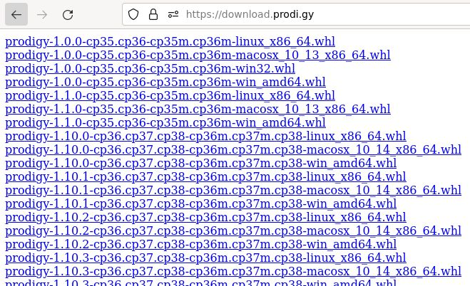

Preventing SpaCy from re-downloading large models
SpaCy and Prodigy are handy tools for natural language processing in Python, but are a pain to install in a reproducible way, say with a Makefile. Downloading a SpaCy model with spacy download -m will always re-download the model, which can be very time and bandwidth consuming for large models. Prodigy is a paid product and can’t be installed from PyPI.
My solution for this is to generate a file containing the links to all the SpaCy models.
curl \
-H "Accept: application/vnd.github+json" \
https://api.github.com/repos/explosion/spacy-models/releases | \
jq '.[].assets[].browser_download_url' | \
awk 'BEGIN {print "<!DOCTYPE html><html><body>"}
{print "<a href=" $0 ">" gensub("\"|.*/", "", "g") "</a><br/>"}
END {print "</body></html>"}' \
> spacy_model_links.htmlThen a model can be installed with pip, for example pip install -f spacy_model_links.html 'en_core_web_trf>=3.4.0<3.5'. If you run the command twice it will check the dependencies (which takes seconds) but it won’t re-download the model (which can take minutes).
This article will show how to install SpaCy models and Prodigy quickly and reproducibly using make and pip-tools. It will explain how installing SpaCy model packages works, and why it downloads the model every time, and some workarounds. Then it will go into how to install Prodigy (if you have a licence) and look deeper into how -f works in pip. The next section will look into how to use these with pip-tools to create a robust build process that won’t break when you try it in a new environment. Finally it will explain the shell script above (and a pure Python version), giving a simpler process for working with SpaCy models.
The main assumption is that you’re using a *nix system (for Windows users I recommend wsl2), that you’re using the same version of Python everywhere (using something like pyenv or conda/mamba to manage Python versions). Also you should be using some sort of virtual environment.
Installing SpaCy Models
The documented way to download a model in SpaCy is something like spacy download -m <model_name>, which can then be used in python with spacy.load. The problem is that every time spacy download is run it downloads the model again, even if it’s already been downloaded. Transformer models like en_core_web_trf are hundreds of megabytes so this can take significant time and space.
In fact using spacy download is not recommended for an automated process; from the documentation
The download command is mostly intended as a convenient, interactive wrapper – it performs compatibility checks and prints detailed messages in case things go wrong. It’s not recommended to use this command as part of an automated process. If you know which package your project needs, you should consider a direct download via pip, or uploading the package to a local PyPi installation and fetching it straight from there. This will also allow you to add it as a versioned package dependency to your project.
Downloading models with pip
When you run spacy download it will output something like
# python -m spacy download en_core_web_trf
Collecting en-core-web-trf==3.4.1
Downloading https://github.com/explosion/spacy-models/releases/download/en_core_web_trf-3.4.1/en_core_web_trf-3.4.1-py3-none-any.whl (460.3 MB)
━━━━━━━━━━━━━━━━━━━━━━━━━━━━━━━━━━━━━━━━ 460.3/460.3 MB 1.1 MB/s eta 0:00:00You can just copy the URL above into a requirements.txt file and install it directly using pip install. The catch is that pip install will always re-download the model each time you run it; it has no way of telling whether the package at the URL is the same as the one already installed.
In fact this was raised as an issue back in 2017, which was solved by appending #egg= to the URL (which somehow convinced pip this was the same package). However this was removed in pip 21.2 (July 2021) so that:
Most of the fragment part, including egg=, is explicitly ignored. Only subdirectory= and hash values (e.g. sha256=) are kept.
Downloading models only once
One way to solve this would be to check if it’s already installed, and only then install it. For example the following command will return a non-zero status only if en_core_web_trf is not installed.
python -c 'import importlib.util; assert importlib.util.find_spec("en_core_web_trf") is not None'A more robust approach is to use pip download to download the files to a local directory, and then install from there. For example if you put all the model files in a requirements-model.txt you can download them to the build/ folder using
pip download -r requirements-model.txt --no-deps --dest build/The best thing is if you run this twice it doesn’t download the files a second time. You can then pip install the files from the build/ directory.
Putting it into a workflow
The strategy to tie this all together is:
- Create a
requirements-model.txtfile with the model requirements - Create a
requirements.infile with all the other requirements - Every time either file changes, download the models and produce a
requirements.txtfile
We can list the directory of build/ to find all the downloaded model files to install. This can be done with a Makefile like the following:
requirements.txt: requirements.in requirements-model.txt
pip download -r requirements-model.txt --no-deps --dest build/
cp requirements.in requirements.txt
find build/ -type f >> requirements.txt
install: requirements.txt
pip install -r requirements.txtGotchas
The main limitation here is you have to manage the dependencies for model versions yourself. If you want to upgrade SpaCy, you’ll have to manually update all the requirements-model.txt files to the compatible models. As a result you should restrict SpaCy to a major version (e.g. >=3.4.0,<3.5.0) until you’re ready to upgrade.
Installing Prodigy
Prodigy is a commercial, closed-source, standalone Python application, and so is not available on PyPI. However while your license is valid for upgrades they allow installation via pip authenticating with your license key.
pip install prodigy -f https://XXXX-XXXX-XXXX-XXXX@download.prodi.gyThis works because -f is the same as –find-links
If a URL or path to an html file, then parse for links to archives such as sdist (.tar.gz) or wheel (.whl) files. If a local path or file:// URL that’s a directory, then look for archives in the directory listing. Links to VCS project URLs are not supported.In this case the URL above the license key before the @ sign as user info for authentication. When the login is valid a HTML file is served containing all the prodigy releases with hyperlinks to the package files. Pip can then use these to find the relevant release.

Keeping credentials secret
The problem is if you put this line in a Makefile it will echo your secret license key as it runs the command, which may end up exposed in a log somewhere. You can silence the whole line, but then it’s harder to debug what’s going on.
A better solution is to use the PIP_FIND_LINKS environment variable for configuration. As long as you include the prodigy URL above in this variable you don’t need to explicitly pass it in -f and so make won’t print it out. Pip will echo the links but is smart enough to mask the sensitive user info.
Looking in links: https://****@download.prodi.gyOne way to set the variable is to have a .env file in .gitignore like this, and include .env in your Makefile. Here’s what it could look like.
PRODIGY_KEY=XXXX-XXXX-XXXX-XXXX
export PIP_FIND_LINKS=https://${PRODIGY_KEY}@download.prodi.gyReproducible builds with pip-tools
One problem with model pipelines is a change in a dependency can suddenly break or change the behaviour. When you’re trying to run the same code in different environments this can be really hard to debug. As an example I’ve have Pandas break handling of nullable fields between releases. A good way to handle this is to pin the versions of all dependencies (that is use one specific version), and have a separate process to upgrade the dependencies periodically (and check the tests pass). The pip-tools library provides a good way to do it.
You specify your dependencies in a requirements.in file, run pip-compile to generate a requirements.txt file (optionally with --upgrade to upgrade dependencies), and pip-sync to install them into your environment. To make things even more secure you can pass --generate-hashes which will check the hashes of all the files to check nothing has been changed. It also works with pyproject.toml and other ways of specifying inputs, and it works well. There are other solutions to this like poetry but pip-tools is less opinionated and simpler for a standalone project that’s not being published to PyPI.
Keeping credentials secret with pip-tools
To make things reproducible pip-tools compile will output all the find-links in the requirements.txt file, which should be committed. This is a problem because we have our license key secret in our links, but it can be turned off with --no-emit-find-links.
Stop trying to reinstall things already installed
For URL or file dependencies, pip-sync will uninstall and reinstall them each time it’s run. This makes it a bit slower to use each time.
A workaround for this is to use --find-links with the build directory itself, and pass the package names into pip-compile.
Here’s an example workflow, you could have a requirements-model.in.raw file that looks like this:
https://github.com/explosion/spacy-models/releases/download/en_core_web_trf-3.4.0/en_core_web_trf-3.4.0-py3-none-any.whlThen in the Makefile you could download all the requirements into build and produce a requirements-model.in file with the package names:
requirements-model.in: requirements-model.in.url
mkdir -p build/
pip download -r requirements-model.txt --no-deps --dest build/
ls build/ | sed 's/-.*//' > requirements-download.inThen when we want to install the dependencies we can pip-compile the files and run pip-sync:
requirements.txt: requirements.in requirements-model.in
python -m piptools compile --no-emit-find-links --generate-hashes \
--find-links build/ \
--output-file requirements.txt \
requirements.in requirements-model.in
install: requirements.txt
python -m piptools sync --find-links ./build/ requirements.txtIs there an easier way?
All these workarounds are because there’s no way for pip to align the package versions to a URL. If we had each SpaCy model’s name with a link to its package in a HTML page (like Prodigy does) then pip could resolve the links.
We can easily build this because all the models are on the spacy-models release page. Using the Github releases API we can do this with a bit of shell scripting.
curl \
-H "Accept: application/vnd.github+json" \
https://api.github.com/repos/explosion/spacy-models/releases | \
jq '.[].assets[].browser_download_url' | \
awk 'BEGIN {print "<!DOCTYPE html><html><body>"}
{print "<a href=" $0 ">" gensub("\"|.*/", "", "g") "</a><br/>"}
END {print "</body></html>"}' \
> spacy_model_links.htmlOr equivalently in Python we can get all the URLs using the API.
import json
import urllib.request
from typing import List
def get_spacy_model_links() -> List[str]:
url = "https://api.github.com/repos/explosion/spacy-models/releases"
headers = {"Accept": "application/vnd.github+json"}
req = urllib.request.Request(url, headers=headers)
with urllib.request.urlopen(req) as response:
data = json.loads(response.read())
links = [
asset["browser_download_url"]
for release in data
for asset in release["assets"]
]
return linksThen we can combine the links into an HTML document that pip can understand:
def spacy_model_links_to_html(links: List[str]) -> str:
html = ["<!DOCTYPE html><html><body>"]
for link in links:
html.append(f'<a href="{link}">{link.split("/")[-1]}</a><br/>')
html.append("</body></html>")
return "\n".join(html)Simplified process
Now that we have the links we can treat a SpaCy model like any other dependency. We just have a single requirements.in file and can specify a version such as en_core_web_trf>=3.4.0,<3.5.0. It even checks and resolves the model’s dependencies correctly.
Our Makefile is now relatively simple:
requirements.txt: requirements.in
python -m piptools compile -q --no-emit-find-links \
--find-links spacy_model_links.html
install: requirements.txt
python -m piptools sync \
--find-links spacy_model_links.htmlMy question is why SpaCy doesn’t provide something like this. If this HTML links page was republished somewhere with every release, then I could just point to it with find-links (assuming there’s good reason they aren’t in PyPI). But this simple solution of generating a file works until they provide a better way.